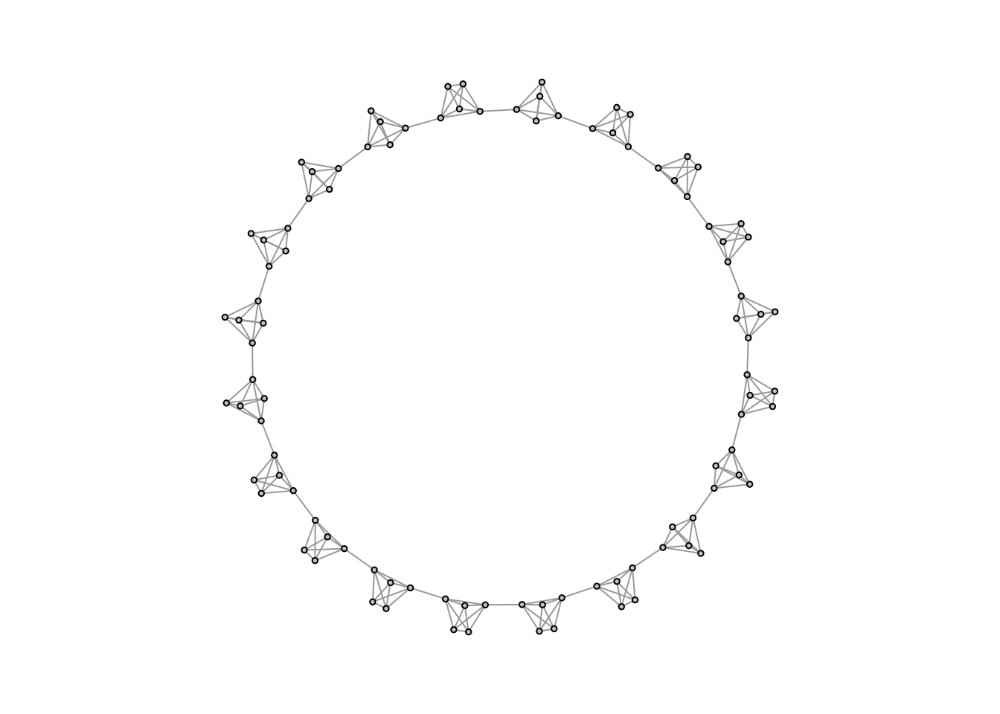
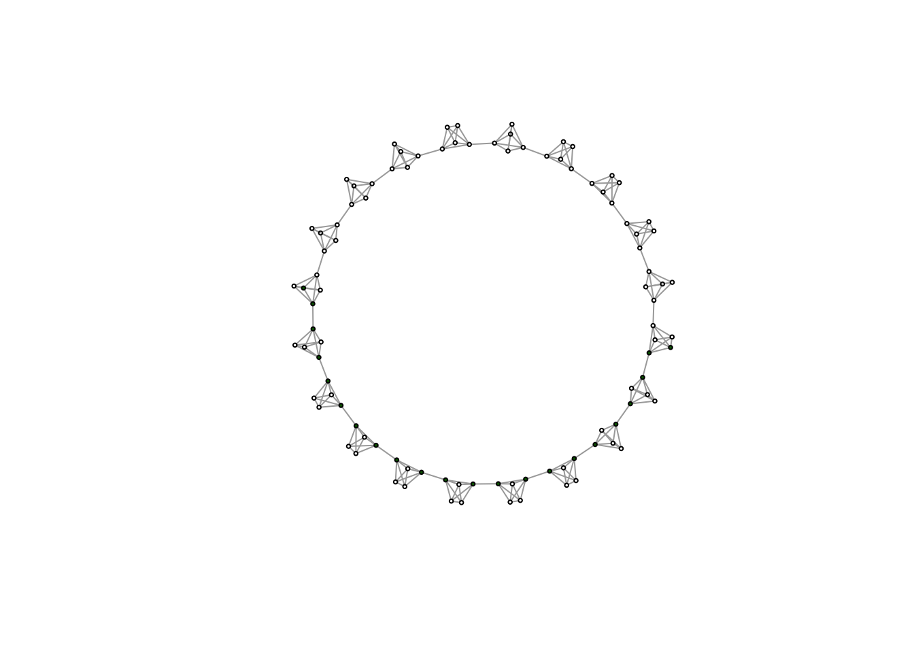
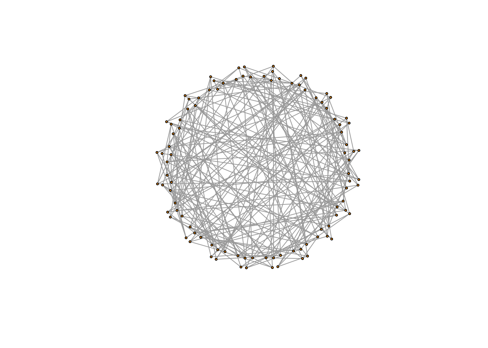
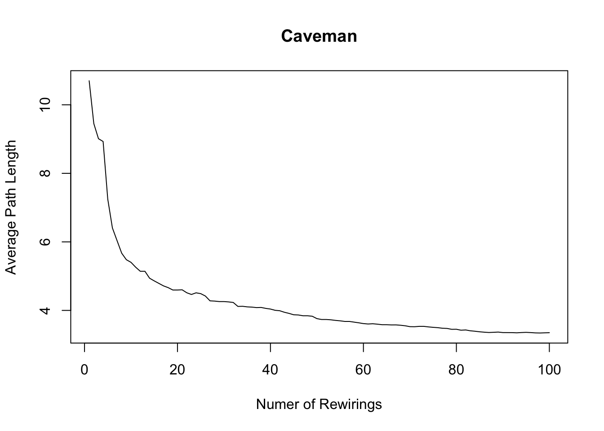
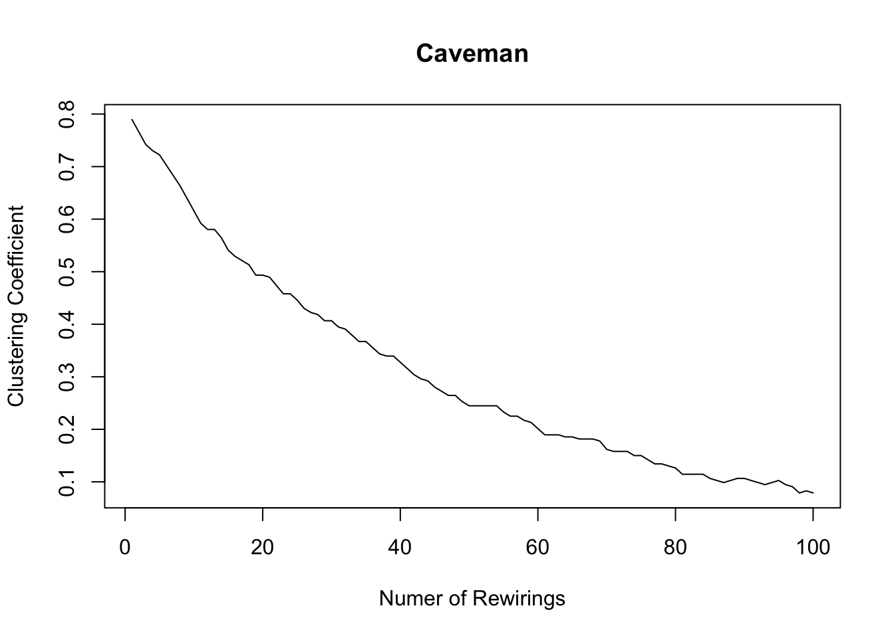
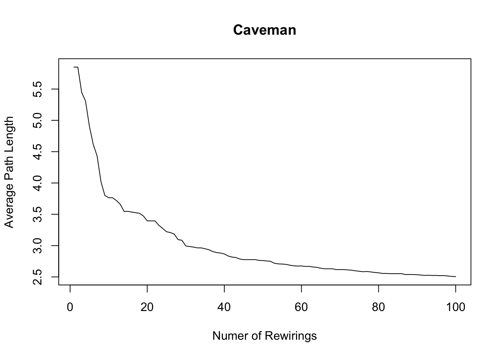
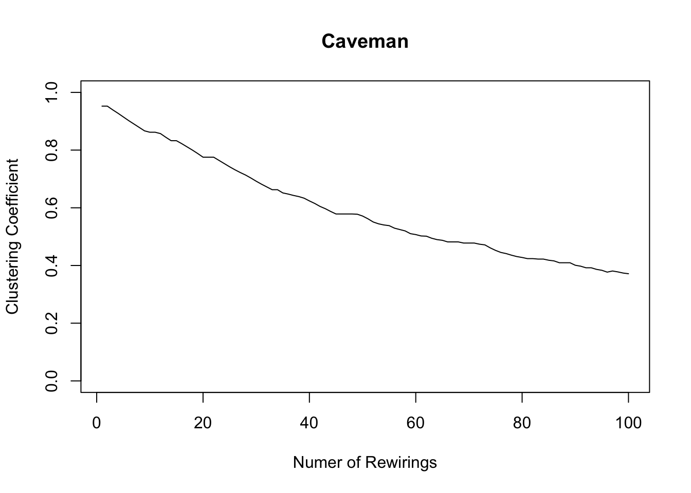
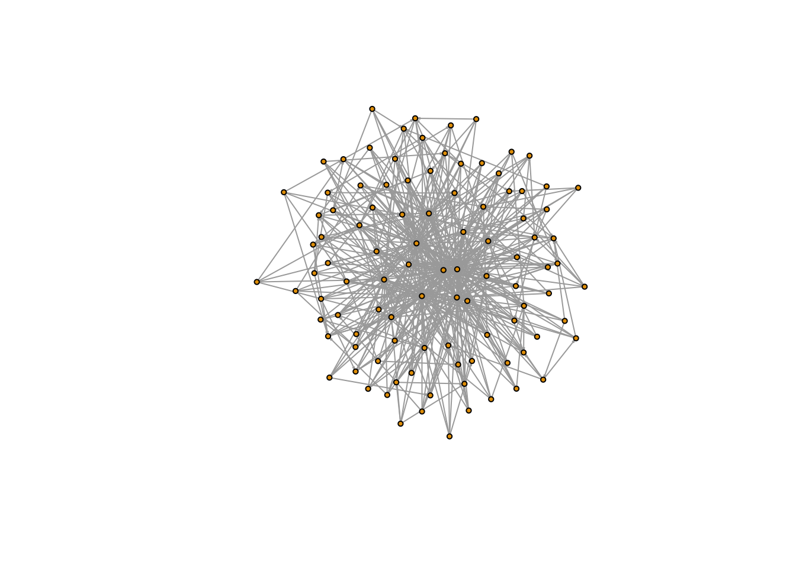
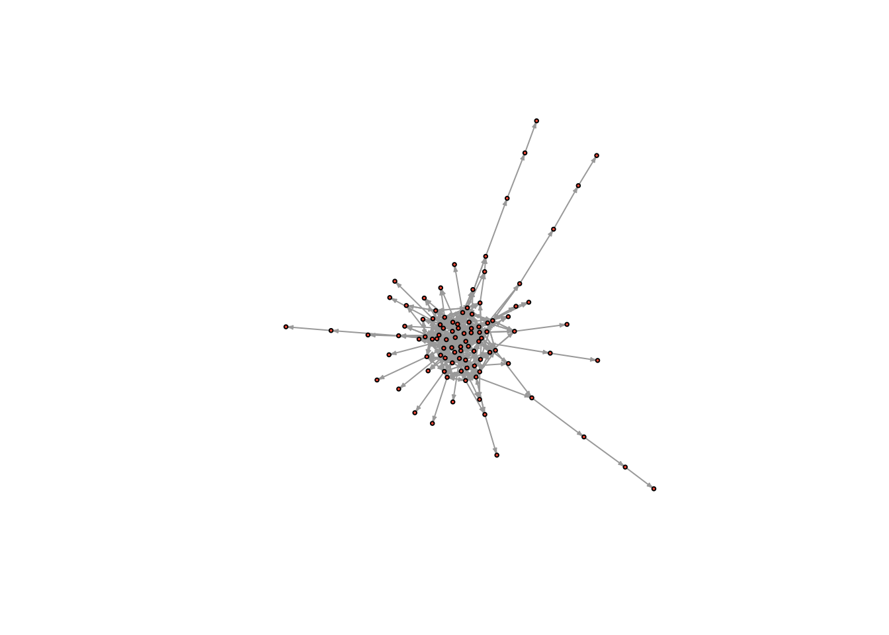

10 The Small World Problem and the Art-Science of Simulation
Real-world social networks tend to be small worlds. In a small world, people are clustered in groups, but despite this, are still, on average, socially proximate. For example, you might think that you are socially (and spatially) distant from a random villager in India, but find that through a series of steps, you could reach that villager. The villager lives in her own small world and you live in yours, and yet you are mutually reachable. This is referred to as “the Small-World Phenomenon”.
Duncan Watts in his landmark paper explains this phenomenon. He begins with most clustered (and yet connected graph) imaginable - a “caveman” structure. There are groups of people clustered together and connected by only one or two connections to other groups.
Sadly, igraph doesn’t have a function for simulating caveman structures, so I quickly wrote one myself. In this caveman structure, all of the groups will be the same size, so the number of people must be evenly divisible by the size of groups. The basic idea is to generate a bunch of fully connected groups and then connect them by an edge or two so that they are arrayed around a circle.
simulate_caveman <- function(n = 25, clique_size = 5){
require(igraph)
# Groups are all the same size, so I check whether N is divisible by the size of groups
if ( ((n%/%clique_size) * clique_size) != n){
stop("n is not evenly divisible by clique_size")
}
groups = n/clique_size # this determines the number of groups
el <- data.frame(PersonA = 1:n, Group = NA) # I create a dataframe which has people and the groups they are in
# I treat it like a person to group edgelist
group_vector = c()
for (i in 1:groups){
group_vector <- c(group_vector, rep(i, clique_size))
}
el$Group <- group_vector
inc <- table(el) # I use the table function to turn the person to group edgelist into an incidence matrix
adj <- inc %*% t(inc) # And I use matrix multiplication with the transpose to turn the person to group incidence matrix
# into a person to person adjacency matrix
diag(adj) <- 0
g <- graph.adjacency(adj, mode = "undirected") # I graph this matrix
group_connect <- seq(from = 1, to = n, by = clique_size) # I determine the points of connection using a sequence funciton
for( i in 1:(length(group_connect)-1)){
p1 <- group_connect[i] + 1
p2 <- group_connect[i+1]
g <- add.edges(g, c(p1,p2)) # And I connect the points of connection using add.edges
}
g <- add.edges(g, c(group_connect[1],(group_connect[groups]+1))) # finally I connect the ends of the structure so that it forms a circle
return(g)
}You don’t have to understand every part of this function in order to use it. All you need to do is run the function above so that it is in your R environment. You can then use it.
It has two arguments - number of nodes and the size of the groups. You could change clique_size to 4 or 10.
caveman_net <- simulate_caveman(n = 100, clique_size = 5)
par(mar = c(2,2,2,2))
plot(caveman_net, layout = layout.kamada.kawai(caveman_net), vertex.size = 2, vertex.label = NA, vertex.color = "grey80")
Now you can clearly see what a caveman structure is. Let’s analyze it.
graph.density(caveman_net)## [1] 0.04444444transitivity(caveman_net) # transitivity() measures clustering coefficient, which essentially says, how clustered is the network overall## [1] 0.7894737average.path.length(caveman_net)## [1] 10.70101It has a pretty low density since most nodes only have connections within their clique or else one tie outwards. And as I mentioned above, caveman structures are extremely clustered, since most edges are within group.
Path length is also high - basically it takes 10 steps, on average, to reach one node from a random other node. In the real world, there are way more than 100 people and more than 20 groups, so it should be even more surprising that the average degree of separation is roughly six or seven steps. It follows that the “caveman structure” is not a small-world.
We can look at the diameter of the network to see this too. The diameter is the longest shortest path.
nodes.diameter<-get.diameter(caveman_net)
V(caveman_net)[nodes.diameter]$color<-"darkgreen" # This assigns those nodes the color darkgreen.
plot(caveman_net, layout = layout.kamada.kawai(caveman_net), vertex.size = 2, vertex.label = NA)
Let’s reset color.
V(caveman_net)$color <- "orange"Watts wants to get from this network structure, to one in which the average path length is much lower. He performs a simple exercise to do so (and one we have already experimented with). He randomly rewires the network so that it begins, slowly to approximate a random graph. Random graphs have low average path length; so this is a good idea.
We end up with a caveman structure with some number of rewired edges that will have the tendency to cut across the network
caveman_net_rewired <- rewire(caveman_net, keeping_degseq(niter = 1000))We can use the rewire function to rewire the network. keeping_degseq() ensures that the degree distribution does not change and niter = 20 is the number of iterations (rewirings).
plot(caveman_net_rewired, layout = layout.kamada.kawai(caveman_net), vertex.size = 2, vertex.label=NA)
Most of the rewirings cut across the network structure!
plot(caveman_net_rewired, layout = layout.kamada.kawai(caveman_net_rewired), vertex.size = 2, vertex.label=NA) # Here it is laid out properly
plot(caveman_net_rewired, layout = layout.kamada.kawai(caveman_net_rewired), vertex.size = 2, vertex.label = NA, vertex.color = "grey80")
Let’s compare this to the caveman network.
graph.density(caveman_net_rewired) ## [1] 0.04444444transitivity(caveman_net_rewired) ## [1] 0.03552632average.path.length(caveman_net_rewired)## [1] 3.309899Density is unchanged. Clustering coefficient is less than before, but still relatively high. And average.path.length was cut in half. Only 20 rewirings and look at the change!
We can analyze the change as we perform more rewirings.
caveman_net_rewired <- simulate_caveman(n = 100, clique_size = 10)
avgpathlength <- average.path.length(caveman_net_rewired) # These are the first observation
clusteringcoefficient <- transitivity(caveman_net_rewired)
iter = 100
for ( i in 2:iter){
caveman_net_rewired <- caveman_net_rewired %>% rewire(keeping_degseq(niter = 1))
avgpathlength <- c(avgpathlength, average.path.length(caveman_net_rewired)) # We are just appending the result to a vector
clusteringcoefficient <- c(clusteringcoefficient, transitivity(caveman_net_rewired))
}
plot(1:100, avgpathlength, xlab = "Numer of Rewirings", ylab = "Average Path Length", main = "Caveman", type = "l")
lines(1:100, clusteringcoefficient)
plot(1:100, clusteringcoefficient, xlab = "Numer of Rewirings", ylab = "Clustering Coefficient", main = "Caveman", type = "l", ylim = c(0,1))
10.0.1 Other simulations
Simulations are used a lot in networks. We only talk in class about random nets and small-worlds, but there are many ideal-type networks. The third most famous is the “scale-free” network. “scale-free networks” are also known as hub-based networks, because they have a few actors with high degree and many actors with low degree. They are therefore highly centralized, and generally have low clustering.
igraph has a built in function to generate this class of networks: barabasi.game()
scalefree <- barabasi.game(n=100, m=5)
plot(scalefree, vertex.size = 3, layout = layout.kamada.kawai(scalefree), edge.arrow.size = .1, vertex.label=NA)
graph.density(scalefree)## [1] 0.0489899transitivity(scalefree) ## [1] 0.1863455average.path.length(scalefree)## [1] 1.830935Density, when m = 5, is roughly the same as the small-world network. Clustering coefficient is much lower. And average path length is short, because people can access almost everyone else via the hubs in the network.
Look for other games in the igraph manual… or, you can write your own like we did above.
# A basic function which prevents the formation of specified triads in a random graph simulation
banning_triads_game = function(n = 100, porm = .05, banned = c(2), sim_max = 1000000, probrecip = .5){
require(igraph) # Ensures igraph is loaded
if(any(c(1) %in% banned)){
stop("Can't ban 003s") # Stops the simulation if the user tried to bad 003 or 012 triads
}
num_edges = round(n*(n-1)*porm, 2) # calculates the desired number of edges according to the N and Porm parameters
net = make_empty_graph(n = n, directed = TRUE) # initializes an empty network
edge_count = 0
sim_count = 0
while(edge_count < num_edges){ # Begins a loop, which ends once the requisite number of edges is reached.
# This part samples two nodes, checks whether the two sampled nodes are the same node, and whether an edge is already present in the network between these nodes
uniq = TRUE
edge_present = TRUE
while(uniq == TRUE | edge_present == TRUE){
edge_id = sample(1:n, 2, replace = T)
uniq = edge_id[1] == edge_id[2]
reciprocated = sample(c(FALSE, TRUE), 1, prob = c(1-probrecip, probrecip))
edge_present_1 = are.connected(net, edge_id[1], edge_id[2])
if (reciprocated){
edge_present_2 = are.connected(net, edge_id[2], edge_id[1])
edge_present = edge_present_1|edge_present_2
} else {
edge_present = edge_present_1
}
}
# Calculates the traid census for the network before adding an edge
before = triad.census(net)
net_new = net + edge(edge_id) # Adds in the edge
if(reciprocated){
edge_id_rev = edge_id[2:1]
net_new = net_new + edge(edge_id_rev) # Adds in the edge
}
after = triad.census(net_new) # Calculates the triad census again
triad_diff = after - before # Checks to see how much the triad census changed
if(all(triad_diff[banned] == 0)){
net = net_new # If the banned triads still aren't observed, then the new network is accepted.
}
edge_count = ecount(net) # number of edges updated
sim_count = sim_count + 1 # Simulation count updated
if(sim_count > sim_max){
print("Warning: Failed to converge, banned triads may be incompatible") # exits simulation if simulation max count is exceeded
return(net)
}
}
return(net) # Returns the simulated network
}no_cycles = banning_triads_game(banned = c(4,5,7))
triad_census(no_cycles)## [1] 136937 4228 18830 0 0 14 0 229 1 0
## [11] 1372 0 4 1 10 74plot(no_cycles, vertex.size = 2, vertex.label = NA, vertex.color = "tomato", edge.arrow.size = .2)